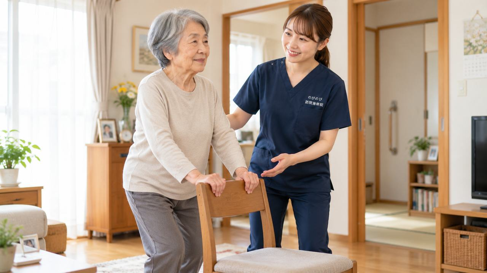

円背は「えんぱい」と読みます。背中、正確には背骨の胸のあたりが前に向かって丸く曲がり、その形が戻りにくくなってきた状態を指す言葉です。健康診断や訪問リハビリの記録で目にして、はじめて意味を調べる方が多いところでもあります。見た目の変化として語られがちですが、実際にご本人が困るのは、腰や背中のこわばり、前が見づらくて歩きにくい、食事のときに飲み込みづらい、といった日々の場面です。円背がどういう状態で、何が重なって進むのか、そして家でできることと医療に任せるべきことの境目を、順番に整理します。
この記事のポイント
円背は、背骨と背中の筋肉の加齢変化、長年の姿勢のくせ、骨がもろくなって起きる圧迫骨折などが重なって進みます。曲がった骨の形そのものを施術で元に戻すことはできず、そこは医療が受け持つ部分です。急に曲がった、強い背中の痛みがある、脚に力が入らないといったときは、まず整形外科へ。訪問鍼灸でできるのは、引っぱられてこわばった背中・腰・胸まわりの筋肉をやわらげ、血のめぐりを促す補助と、動かせる範囲を保つ機能訓練です。医師の同意があれば医療保険が使え、自己負担は1回およそ395円が目安です。
円背とは、どういう状態のことでしょうか
背骨は横から見ると、首で前にゆるくカーブし、胸のあたりで後ろにゆるく丸まり、腰でまた前にカーブしています。もともと胸のあたりは少し丸いのが自然な形です。その丸みが強くなり、上半身が前に倒れた姿勢で固まってきた状態を円背と呼びます。
似た言葉に亀背（きはい）があります。どちらも背中が丸くなった状態を指し、日常ではほぼ同じ意味で使われます。あえて分けるなら、円背は全体がなだらかに丸い状態、亀背は背骨の一部が角ばって突き出た状態を指します。くわしくは「円背と亀背の違いは？背中が丸くなる原因と、自宅でできるケア」をご覧ください。猫背も近い言葉ですが、こちらは若い方にも使われ、姿勢を意識すれば伸ばせる段階を含みます。円背と呼ばれるころには、伸ばそうとしても伸びきらないことが多くなります。
何が重なって、背中は丸くなっていくのか
ひとつの原因で決まるものではなく、いくつかが少しずつ重なって進みます。
まず、背骨のあいだにある椎間板が年月とともに薄くなり、背骨を支える力が落ちてきます。次に、背中側で体を起こしている筋肉が細くなり、前に倒れる力に負けやすくなります。前かがみで過ごす時間が長い生活も後押しします。台所仕事、畑、裁縫、手仕事。長く続けてこられた姿勢が、そのまま体に残ることがあります。
もうひとつ大きいのが、骨がもろくなって背骨がつぶれる圧迫骨折です。つぶれ方が前寄りだと、背骨がくさび形になり、その分だけ上半身が前に傾きます。これが何か所か重なると、背中の曲がりは一気に進みます。痛みがないまま起こることもあり、気づかれないこともあります。このつながりは「骨がもろくなると背中は丸くなる？骨粗鬆症と円背・亀背のつながり」でくわしく書きました。
このまま放っておくと、どうなるのでしょうか
背中の曲がりそのものは痛みを出しません。つらさは、曲がった体を支えようとして起こる二次的なものです。
上半身が前に倒れると、倒れきらないように腰と首が余分に働きます。腰の筋肉は一日中引っぱられ、首は前を見るために反り返ったままになります。ここから腰の痛み、背中の張り、首肩のこわばりが出ます。
歩きにくさも出てきます。目線が下がって前方が見づらく、重心が前にあるため小さな段差でつまずきやすくなります。転倒が心配になれば出歩く回数が減り、筋力はさらに落ちていきます。
胸が狭くなることで、息が浅く感じられることもあります。あごが上がった姿勢は飲み込みにも影響し、食事に時間がかかったり、むせやすくなったりします。おなかが圧迫されて食べる量が減る方もおられます。
つまり円背は、放っておくと姿勢が悪くなるという話ではなく、痛み・歩きにくさ・食事のしにくさという形で暮らしの範囲をせばめていきます。早いうちから、こわばりを残さない手入れと、動かせる範囲を保つことが効いてきます。
先に整形外科などへ向かってほしいとき
次のようなときは、鍼灸やマッサージより先に医療機関で確かめてください。
ここ数週間から数か月で急に曲がってきたとき。背中や腰に強い痛みが出て、寝返りや起き上がりでひどくなるとき。脚に力が入らない、足裏の感覚がおかしい、尿が出にくいといった変化があるとき。発熱や体重の減りをともなうとき。こうした場合は、圧迫骨折や神経の圧迫、そのほかの病気が背景にあることがあります。画像で確かめられるのは医師だけです。
当院にご相談いただいた場合も、こうした様子があれば受診をおすすめし、状態が落ち着いてからの施術をご案内しています。
丸まった背中の、どこがこわばっているのか
背中が丸い方の体をみていくと、こわばりは背中だけにとどまっていません。
胸の前側、鎖骨の下から脇にかけての筋肉は、前に閉じた姿勢で縮んだままになります。背中側の肩甲骨のあいだは、逆に引き伸ばされたまま固まります。腰は反りを保とうとして張りつめ、首の後ろは前を見るために縮みます。太ももの前と股関節のつけ根も、座る時間が長ければ固くなります。
そのため、うかがったときには背中だけを触るのではなく、首から脚のつけ根まで順に確かめていきます。背中のつらさの出どころが、胸の前や股関節にあることも珍しくありません。
鍼やお灸で、張りつめた背中をゆるめる
鍼とお灸は、こわばった筋肉をゆるめ、その場の血のめぐりを促す方向に働きます。円背でいえば、腰と背中の張り、肩甲骨まわりの重さ、首の後ろの固さといった部分です。骨の形は変わりませんが、同じ姿勢のままでも痛みの度合いは変わってきます。
はり・きゅうの施術が医療保険の対象になるのは、慢性的な痛みやしびれ、麻痺にともなうこわばりについて、医師が治療の必要を認めて同意した場合です。円背という状態そのものではなく、それにともなう腰痛や背中の痛みが対象になります。同意書の取り方は「訪問鍼灸マッサージの同意書｜かかりつけ医への頼み方と流れ」でご案内しています。
動かせる範囲を保つ、機能訓練という支え
施術でゆるめたあと、そのまま動かさなければ元に戻っていきます。そこで、鍼やお灸に重ねて、関節を動かす練習も一緒に行います。
肩をゆっくり回す、胸を開く方向に腕を上げる、座ったまま体を左右にひねる、あお向けで膝を立てて左右に倒す。どれも無理に伸ばすものではなく、今ある範囲を使い切る程度のものです。ご本人が一人でも続けられる形を選び、ご家族にも見ていただきます。動かさない時間が関節を固くしていく仕組みは、「関節の拘縮・寝たきりを防ぎたい方へ｜自宅で訪問鍼灸マッサージ」で詳しくご紹介しています。
家では、背中を反らさず「支える」工夫を
背中をまっすぐにしようと後ろから押したり、無理に反らせたりするのは避けてください。骨がもろくなっている場合、それだけで痛みが出ることがあります。目指すのは伸ばすことではなく、丸い背中のまま楽に過ごせる形を作ることです。
いすに座るときは、足の裏がきちんと床につく高さにし、背もたれとのあいだにできた隙間に丸めたタオルや小さなクッションを入れます。これだけで、腰が引っぱられる感じがやわらぐことがあります。机は少し高めのほうが、あごが上がらずに済みます。
同じ姿勢を長く続けないことも効きます。一時間に一度でも、立つ、向きを変える、腕を上げる。それだけで背中の張りは違ってきます。冷えると筋肉は固くなるので、背中と腰は冷やさないようにしてください。
車いすやベッドでの支え方は場面ごとにこつがあるので、「円背の方の座り方・寝かせ方｜車いす・食事・ベッドでの支え方」に分けて書いています。
出かけずに、いつもの姿勢のまま受けられます
背中が丸くなってくると、通院そのものが負担になります。待合いのいすで長く座っていられない、車の乗り降りがつらい、そもそも外に出るのが心配。そういう理由で手入れが途切れてしまうのは、もったいないところです。
訪問での施術なら、いつも過ごしている場所で、そのままの姿勢から始められます。ベッドでも座ったままでも構いません。ふだんどう座り、どう寝ているかを見せていただけるのは、施術する側にとっても手がかりになります。
費用は保険で、1回約395円から
医師の同意があって医療保険が使える場合、自己負担が1割の方で1回およそ395円が目安です。対応エリア内であれば、別途の出張費はいただきません。くわしい内訳は料金のページをご覧ください。
はじめての方には無料体験をご用意しています。どんな流れで進むのか、どのくらいの時間がかかるのか、実際に受けていただいてから決めてください。
よくある質問
円背は何と読みますか？
「えんぱい」と読みます。背中が前に丸く曲がった状態を指す言葉で、亀背（きはい）もほぼ同じ意味で使われます。
円背は治りますか？
曲がった背骨の形そのものを元に戻すことは、施術ではできません。ただ、引っぱられてこわばった筋肉をやわらげて痛みを軽くすること、動かせる範囲を保って進み方をゆるめることはできます。くわしくは「亀背は治りますか？」の記事で整理しています。
円背そのものは保険の対象になりますか？
背中が丸いという状態そのものではなく、それにともなう腰や背中の慢性的な痛み・しびれなどについて医師が治療の必要を認めた場合に、はり・きゅうの施術が医療保険の対象になります。まずは体の状態を見せていただき、対象になるかどうかも含めてご説明します。
要介護認定を受けていなくても利用できますか？
利用できます。この施術は医療保険を使うもので、介護保険とは別の仕組みです。要介護認定の有無にかかわらず、慢性的な痛みやこわばりについて医師が同意し、通院がむずかしい状況であれば対象になります。介護保険の限度額とも別枠です。
背中を伸ばす体操をしたほうがいいですか？
無理に反らせる動きはおすすめしません。骨がもろくなっている場合、それだけで痛みが出ることがあります。動かすなら、肩を回す、胸を開く方向に腕を上げるといった、今ある範囲を使い切る程度のものを。どの動きが向くかは体の状態によりますので、うかがったときにご一緒に決めます。
対応しているのはどの地域ですか？
大阪府では豊中市・吹田市・茨木市・高槻市・箕面市・摂津市・池田市、大阪市では淀川区・東淀川区・都島区・北区・旭区、兵庫県では尼崎市・伊丹市にうかがえます。エリア内は別途の出張費がかからず、どこでも同じ料金です。